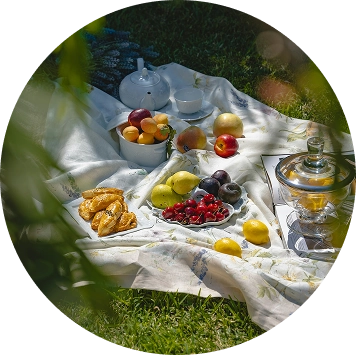

Gjellerup enge
Picnic i blomstrene enge
Oplev Gjellerup Enge!
Nyd naturen fra cykelsaddel eller til fods ad tre kilometer nye vandrestier. Oplev sanglærke og
vibe
flyve over nye
fugtige enge, hvor vilde planter spreder farver og giver nektar til summende bier og
sommerfugle.
Hernings borgere og alle andre kan glæde sig over 144 hektar sammenhængende natur med græssende
dyr,
enge med kær, overdrev, skov og krat.
Oplev naturen
Oplev fugle som sanglærke og vibe på nye fugtige enge, hvor smukke dyr som kvæg og heste græsser
for
at pleje naturen.
Undervejs kan du også glæde dig over vilde blomster, som spreder farver og nektar til summende
bier
og sommerfugle.
Let tilgængelig naturrig picnic
Let tilgængelig naturrig picnic lige ved byen.
Området er naturigt og ligger central omrkring by med sti gennem området.
Faktisk fører den dig næsten helt ind i hjertet af Herning by med sammenhængende
stiforbindelser, det gør det let af
komme til og fra.
Cykelturen
Nyd en smuk cykeltur i natur til og fra arbejdet, med hele familien eller bare for lidt friluftliv ud ad nye stier.Natur
Engene har mest været levested for få almindelige arter som planterne lysesiv og mosebunke.
Der er et rigt fugleliv med 65 arter som knopsvane, gråstrubet lappedykker og
sumpmejse.
Området rummer eng og mose, hvor almindelige planter som kællingetand, mjødurt, dunhammer,
sødgræs, lysesiv, mosebunke,
kær-tidsel, ranunkler m.fl. lever.
Hammerum Bæk løber slynget igennem områdets sydlige del. I bækken er set ørred, bæklampret,
grundling og hundestejler.